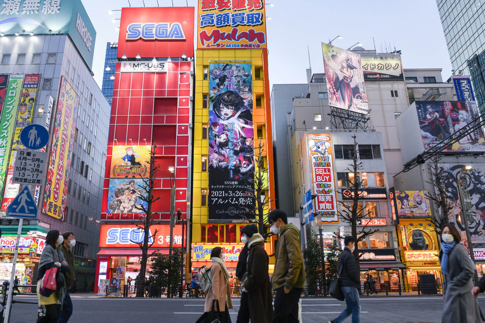
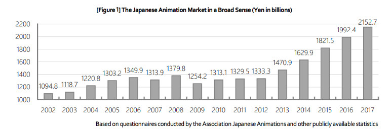
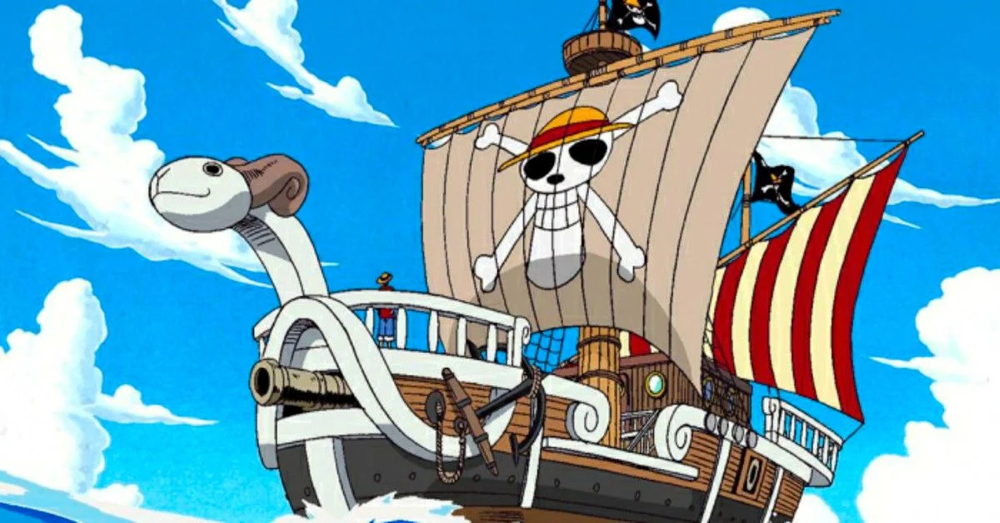
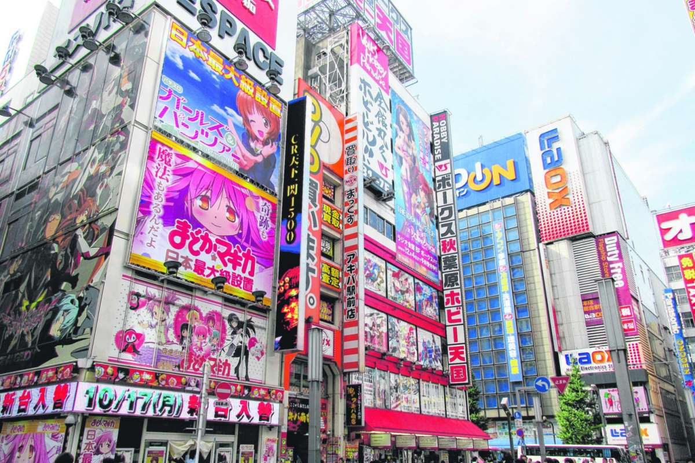

Индустрия на японската анимация
Анимационната индустрия се състои от повече от 430 продуцентски компании с някои от големите студия, включително Toei Animation, Gainax, Madhouse, Gonzo, Sunrise, Bones, TMS Entertainment, Nippon Animation, P.A.Works, Studio Pierrot и Studio Ghibli. Много от студиата са организирани в търговска асоциация, Асоциацията на японските анимации.  Съществува и профсъюз за работници в индустрията, Японската асоциация на създателите на анимация. Студиата често работят заедно, за да произвеждат по-сложни и скъпи проекти, както е направено с Spirited Away на Studio Ghibli. Производството на един аниме епизод може да струва между 100 000 и 300 000 долара.
Маркетинг
През 2001 г. анимацията представлява 7% от японския филмов пазар, над 4,6% пазарен дял за творби на живо. Популярността и успехът на анимето се вижда от рентабилността на пазара на DVD, който допринася за близо 70% от общите продажби. Според статия в Nikkei Asian Review от 2016 г., японските телевизионни станции са закупили аниме на стойност над 60 милиарда йени от продуцентски компании „през последните няколко години“, в сравнение с под 20 милиарда йени от чужбина. Наблюдава се ръст в продажбите на предавания на телевизионни станции в Япония, причинен от късно вечерни анимета с възрастни като целева демографска група. Този тип аниме е по-малко популярен извън Япония, тъй като се счита за „по-скоро нишов продукт.
“Отнесени с духове” е филмът с най-високи приходи за всички времена в Япония. Това беше и най-касовият аниме филм в света, докато не беше изпреварен от филма на Макото Шинкай от 2016 г. Your Name. Аниме филмите представляват голяма част от най-печелившите японски филми годишно в Япония, с 6 от първите 10 през 2014 г., през 2015 г., а също и през 2016 г. В началото на 90-те години няколко компании започнаха да експериментират с лицензирането на по-малко ориентирани към децата материали. Някои, като A.D. Vision и Central Park Media и неговите отпечатъци, постигнаха доста значителен търговски успех и продължиха да се превърнат в основни играчи на сега много доходоносния американски пазар на аниме. Други, като AnimEigo, постигнаха ограничен успех.

Пиратство
Индустрията е обект както на похвали, така и на осъждане за фенове, добавяне на нелицензирани и неразрешени преводи със субтитри на аниме сериали или филми. Fansub, които първоначално са били разпространявани на VHS неизпълнени касети през 80-те години на миналия век, са били свободно достъпни и разпространявани онлайн от

1990-те. Тъй като тази практика поражда опасения за проблеми с авторските права и пиратството, абонатите на фенове са склонни да се придържат към неписан морален кодекс, за да унищожат или да не разпространяват повече аниме, след като официална преведена или субтитрирана версия стане лицензирана. Те също така се опитват да насърчат зрителите да закупят официално копие на изданието, след като то излезе на английски, въпреки че феновете обикновено продължават да циркулират чрез мрежи за споделяне на файлове. Въпреки това, спокойните регулации на японската анимационна индустрия са склонни да пренебрегват тези проблеми, позволявайки й да расте под земята и по този начин да увеличава популярността, докато не се появи търсене на официални висококачествени издания за анимационни компании. Това доведе до увеличаване на световната популярност на японските анимации, достигайки 40 милиона долара от продажби през 2004 г.
Лицензи
Лицензите са скъпи, често стотици хиляди долари за един сериал и десетки хиляди за един филм. Цените варират значително; например, Jinki: Extend струва само $91,000 за лиценз, докато Kurau Phantom Memory струва $960,000. Правата за едновременно предаване в интернет могат да бъдат по-евтини с цени около $1000-$2000 на епизод, но могат да бъдат и по-скъпи, като някои сериали струват повече от $200,000 на епизод.
От 2010 г. анимето се превърна в глобална мултимилиардна индустрия, като постави рекорд за продажби през 2017 г. от 2,15 трилиона йени (19,8 милиарда долара), движещи се до голяма степен от търсенето от чуждестранна

публика. През 2019 г. японската аниме индустрия беше оценена на 24 милиарда долара годишно, като 48% от тези приходи идват от чужбина (което сега е най-големият индустриален сектор). До 2025 г. се очаква аниме индустрията да достигне стойност от 30 милиарда долара, като над 60% от тези приходи ще идват от чужбина.
От 2010 г. анимето се превърна в глобална мултимилиардна индустрия, като постави рекорд за продажби през 2017 г. от 2,15 трилиона йени (19,8 милиарда долара), движещи се до голяма степен от търсенето от чуждестранна публика. През 2019 г. японската аниме индустрия беше оценена на 24 милиарда долара годишно, като 48% от тези приходи идват от чужбина (което сега е най-големият индустриален сектор). До 2025 г. се очаква аниме индустрията да достигне стойност от 30 милиарда долара, като над 60% от тези приходи ще идват от чужбина.